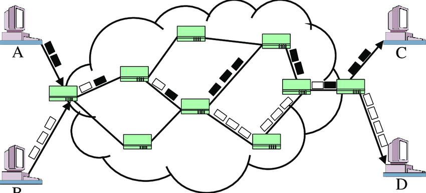
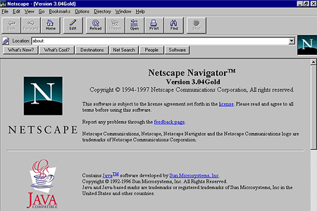

The Internet: Behind the Web
The internet is the defining technology of our time and its capabilities make it possible for information to spread across the globe in a matter of seconds and has revolutionized modern communication. It’s worth noting the Internet has not always been around and needed to be developed to what we use today.
Idea behind the internet was envisioned by a psychologist professor at MIT named JCR Licklider. His vision was that computers would allow people to communicate better which in turn would allow them to aid in the sharing of information among people. The main problem that arose with a network of computers sending information was how such a network would operate. Leonard Kleinrock came up with the idea for packet queueing and distributed routing and switching which led to “hot potato” routing, also known as Packet switching.

The only working networks at the time were telephone networks but they had a weakness which arose if the link was broken, the call would be ended, and no information would get to the endpoint after the link had been broken. Packet switching essentially solved the problem since it allowed messages to still be able to reach the endpoint even if certain links were broken.
The idea of creating a network had many possible versions although finding the most effective way was the issue. Larry Roberts, an American engineer who had built the world’s first experimental connection between two computers was recruited for the job. Roberts was not certain how to develop the network since one would essentially have to program computers how to interact with each other which was highly inefficient, this led him to the idea where the use of specialized computers to sit on the network and be the gateways to interface. These gateways were called Interface message processors or IMPs.
IMPs made it possible to expand a network since they would be a universal commonality so to set up a new computer on the network one would just need to have it communicate with their designated IMP instead of other computers. These IMPs became the foundation of the Advanced Research Projects Agency Network (ARPANET). The ARPANET was a tool developed for defense research and was restricted universities and think tanks and involved in defense research. In April 1971, the ARPANET had eight-teen mainframe computers connected to the network.
At first the uses of the ARPANET involved transferring data files among its members, but then a killer application had been developed which expanded its uses dramatically which was email. Computer networks exploded in popularity after the ARPANET demo. Local Area Networks (LANs) and Wide Area Networks (WANs) started showing up inside companies and campuses.

The rise of these networks led to the problem where the networks would only be private to themselves and had no ability to access any exterior networks. This led to the need for a Standardization of networks that came with TCP IP protocol and gateways allowed for different networks to interface with each other. The main reason networks with gateways work at all was the TCP/IP protocol, it was this and shared knowledge which made it possible to convey information to others.
A major encouragement for the internet explosive growth at the time was the advancement in electronics which brought mainframe computers into the homes and brought computer power down to the size of a desktop PC. Another motivation was on June 4th, 1992 the internet became public instead of government owned and Bernese Lee created the World Wide Web which made it easier for your average person to browse the internet.
In 1992, the world wide web consisted of 50 pages and in 1993 Netscape developed the world’s first breakthrough browser which made browsing the internet even easier. The world wide web and the browser have become the foundation of the user-friendly internet that we use today.
